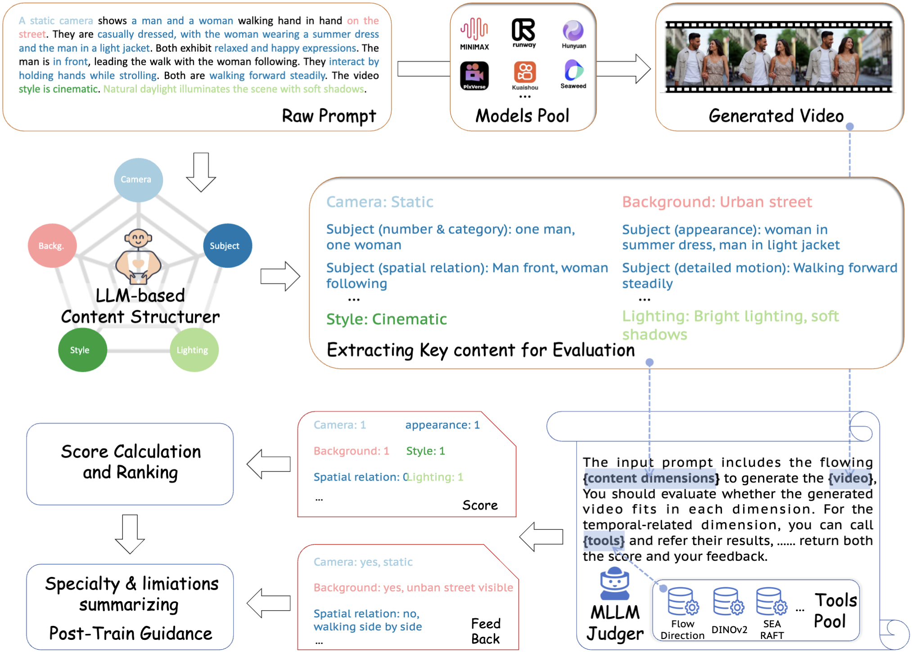
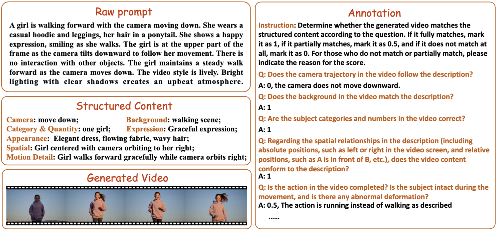
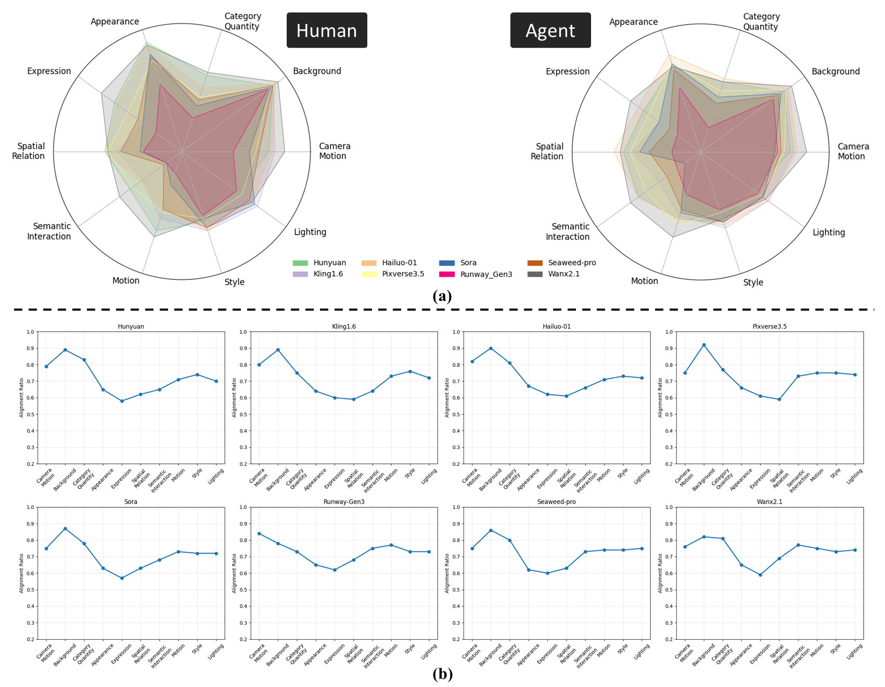
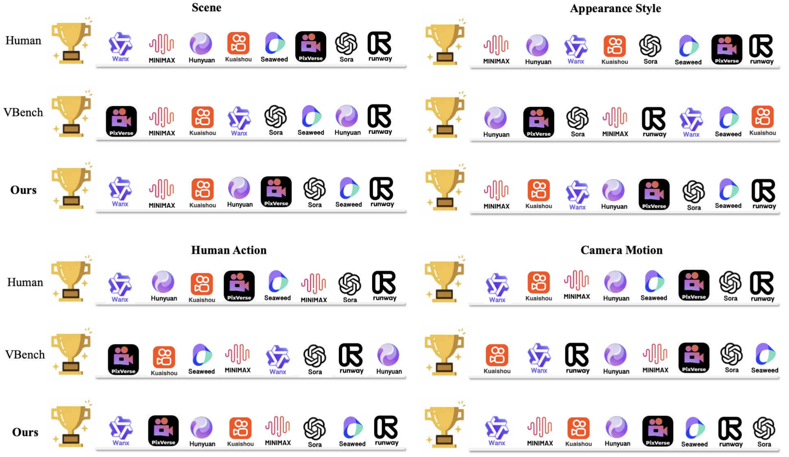

VideoGen-Eval: Agent-based System for Video Generation Evaluation
1USTC, 2SJTU, 3PKUSZ, 4Tencent, 5BFA
*Corresponding Author
The rapid advancement of video generation has rendered existing evaluation systems inadequate for assessing state-of-the-art models, primarily due to simple prompts that cannot showcase the model's capabilities, fixed evaluation operators struggling with Out-of-Distribution (OOD) cases, and misalignment between computed metrics and human preferences. To bridge the gap, we propose VideoGen-Eval, an agent evaluation system that integrates LLM-based content structuring, MLLM-based content judgment, and patch tools designed for temporal-dense dimensions, to achieve a dynamic, flexible, and expandable video generation evaluation. Additionally, we introduce a video generation benchmark to evaluate existing cutting-edge models and verify the effectiveness of our evaluation system. It comprises 700 structured, content-rich prompts (both T2V and I2V) and over 12,000 videos generated by 20+ models, among them, 8 cutting-edge models are selected as quantitative evaluation for the agent and human. Extensive experiments validate that our proposed agent-based evaluation system demonstrates strong alignment with human preferences and reliably completes the evaluation, as well as the diversity and richness of the benchmark.
Key Features:
- A dynamic agent system for video generation evaluation, which orchestrates LLM-based content structuring, MLLM-based judging, and operator-based patch tools to achieve a dynamic, flexible, and expandable evaluation;
- Non-cherry-picked 12,000+ videos generated by 20+ models with over 700 designed prompts. 8 advanced models with human annotations are selected for quantitative tests, building the cutting-edge video generation benchmark;
- Results of 10 vertical-domain, such as human-centric animation and robotics, text alignment, motion diversity, composition, stability, etc. And 10 application scenarios, such as film, advertisment, anime, etc.;
- Challenges and future directions, such as complex motion, interaction, concept understanding, etc.;

Pipeline of Our Agent-based System
The agent-based evaluation system is mainly composed of three parts: LLM-based content structure, MLLM-based judged, and patch tools. The content structurer parses the input prompt into dimension-specific content and sends it, along with the generated video, to the MLLM-based content judger. Leveraging the MLLM fundamental objective understanding capabilities and externally invoked temporally dense tools, the system assesses whether multiple dimensions of the input are accurately generated. The resulting scores and feedback are used for ranking, evaluation, and potentially supporting post-training.
Human Annotation
We employ film and television professionals to annotated the videos generated by 8 cutting-edge models according to the established rules, in order to verify the reliability of the agent system. The above shows the information provided in the human annotation process, as well as the annotation instruction and result examples.
Alignmen between Agent System and Human Evaluation
 (a) The distribution of scores given by humans and agent systems to each dimension of 8 models.
(b) Alignment ratios of agent evaluation to human evaluation on different models across multiple dimensions.
Comparison
Comparisons among Vbench operators, our agent system, and human rankings on several evaluation dimensions.
Notes
Check separate model videos (2024):
We will continue to update the results with model releases and version updates.